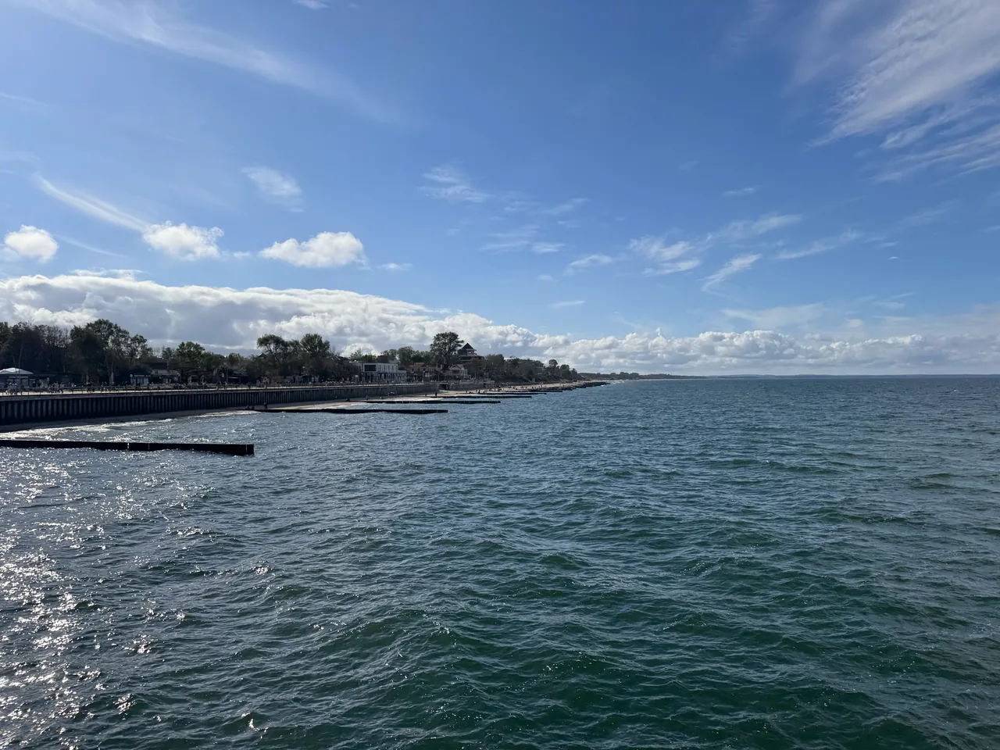

Круизный поезд «Балтийское кольцо» отправится из Калининграда 27 ноября
РЖДТур назначил отправление круизного поезда «Балтийское кольцо» на 27 ноября 2026 года. Тур рассчитан на три дня и две ночи: посадка в туристский поезд на Южном вокзале Калининграда начинается в 22:00. На странице оператора указана цена от 19 990 рублей; авиаперелёт до Калининграда в неё не входит.

Параметры тура на странице оператора
Что построят
Хронология
| Дата | Событие | Источник |
|---|
Контекст
РЖДТур опубликовал анонс осеннего выезда 12 октября. Эта дата относится к публикации анонса; сам поезд отправляется 27 ноября 2026 года.
Что это значит
Перед поездкой
Время посадки и начальную цену оператор указывает в карточке тура. Проверьте там же доступность мест и условия пакета на выбранную дату.
Связи с регионом
Источники
- РЖДТур: круизный поезд «Балтийское кольцо»Опубликовано 12 октября 2026 · сверено 14 октября 2026
- РЖДТур: анонс осеннего выезда «Балтийского кольца»Опубликовано 12 октября 2026 · сверено 14 октября 2026